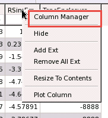
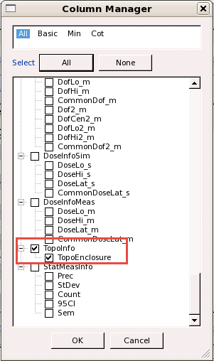
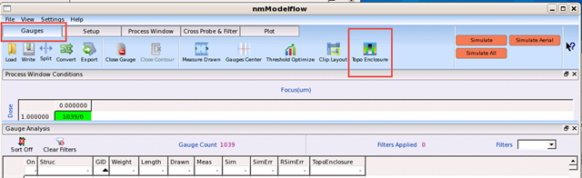

In topo modeling, obtaining the distances
between an oxide and the nearest active edge in a layout assists
in plotting CD errors versus distance. Calibre nmModelflow provides
a console command (mdf topoenclosure) and visualization tools to
perform this optional analysis.
Prerequisites
Calibre
WORKbench and Calibre nmModelflow invoked
The relevant
design file loaded in Calibre WORKbench
The associated
gauge file in the Calibre nmModelflow database
The associated
litho model file in the Calibre nmModelflow database
Procedure
- In Calibre
nmModelflow, activate the gauge file and litho model.
- Switch
to the Gauge Analysis tab. If the Topoenclosure
column is not visible:
- Right-click
any column header in the gauges list, then select Column
Manager from the popup menu.

- In the
Column Manager, scroll down to the entry for TopoEnclosure, and
select it.

Click OK to close the dialog
box and add the column to the Gauge Analysis tab.
- Switch
to the Gauges toolbar, and click the Topo Enclosure button.

- In the
Measure Topoenclosure Distance dialog box, select options as appropriate,
then click OK.
Table 1. Measure
Topoenclosure Distance ParametersField
|
Description
|
|---|
Underlying
|
Specifies the type of underlying layer (active or
poly) corresponding to your litho model.
|
Mode
|
Specifies the measurement mode.
|
Max
|
Specifies the maximum search enclosure distance
in microns.
|
Results
The command runs. On completion, it adds a
Topoenclosure column to the Gauge Analysis tab. The
new column contains enclosure distance values for all gauges it
found to be enclosed, or a value of -8888 for gauges where an enclosure
distance was not found.